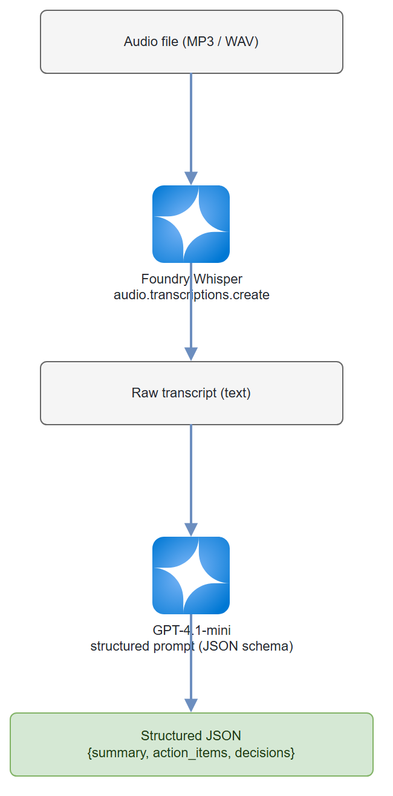

Build it yourself. This project is part of the AI Projects for Cloud Solution Architects portfolio. Full source, code, and the latest updates live in the csa-ai-projects repo on GitHub.
Turn a messy audio recording into a clean JSON summary with action items, owners, deadlines, and key decisions — automatically.
What You're Building
A two-stage Python pipeline. Stage one sends an MP3 or WAV file to Whisper via Foundry and gets back a full transcript. Stage two passes that transcript to a GPT-4.1-mini agent that extracts a structured JSON object: meeting summary, action items (with owner and deadline), and key decisions. The whole thing runs in under 30 seconds for a 1-hour recording.
Prerequisites
- An Azure AI Services / Foundry resource (kind
AIServices, SKUS0) with two model deployments:whisper(transcription) andgpt-4.1-mini(extraction). Create the resource and deployments via CLI: ```bash # Resource (skip if you already have one) az cognitiveservices account create \ --name--resource-group \ --kind AIServices --sku S0 --location eastus2 --custom-domain --yes
# Whisper deployment (deployment name must be 'whisper' to match the script)
az cognitiveservices account deployment create \
--name
# gpt-4.1-mini deployment
az cognitiveservices account deployment create \
--name
Whisper isn't in every region —
eastus2,northcentralus,swedencentral, andwesteuropeall have it. Deploy both models on the same resource. Confirm versions for your region withaz cognitiveservices account list-models --name <name> --resource-group <rg> -o table. - Azure CLI logged in (az login) with Cognitive Services OpenAI Contributor on the resource. - Python 3.11+ -openai >= 1.30.0,azure-identity,python-dotenv-AZURE_OPENAI_ENDPOINTset in.envto your resource endpoint (https://<your-resource-name>.cognitiveservices.azure.com/) - An MP3 or WAV file to test with (any meeting recording, or use the sample transcript in Test It)
pip install "openai>=1.30.0" azure-identity python-dotenv
Architecture

Step-by-Step Build
Step 1 — Set up client
Whisper transcription and chat extraction both run through a single AzureOpenAI client pointed at your Foundry resource's Azure OpenAI endpoint, authenticated with DefaultAzureCredential (no API keys).
import os
import json
from dotenv import load_dotenv
from azure.identity import DefaultAzureCredential, get_bearer_token_provider
from openai import AzureOpenAI
load_dotenv()
ENDPOINT = os.environ["AZURE_OPENAI_ENDPOINT"] # https://<resource>.cognitiveservices.azure.com/
token_provider = get_bearer_token_provider(
DefaultAzureCredential(), "https://cognitiveservices.azure.com/.default"
)
openai = AzureOpenAI(
azure_endpoint=ENDPOINT,
azure_ad_token_provider=token_provider,
api_version="2025-04-01-preview",
)
Why not the Foundry project client?
AIProjectClient.get_openai_client()routes to the project's/openai/v1/surface, which serves chat completions but returns 404 for Whisper audio transcription. The Azure OpenAI endpoint above serves both audio and chat, so one client covers the whole pipeline. (Structured outputs withstrict: truerequire api-version2024-08-01-previewor later —2025-04-01-previewis used here.)
Step 2 — Transcribe the audio
def transcribe(audio_path: str) -> str:
"""Send audio file to Whisper, return transcript text."""
with open(audio_path, "rb") as f:
response = openai.audio.transcriptions.create(
model="whisper", # Foundry deployment name for Whisper
file=f,
response_format="text"
)
print(f"Transcript length: {len(response)} characters")
return response
Gotcha: Whisper via Foundry has a 25 MB file size limit. For longer recordings, split the audio first using
pydub:```python from pydub import AudioSegment
def split_audio(path: str, chunk_ms: int = 600_000) -> list[str]: """Split audio into N-minute chunks, return list of temp file paths.""" audio = AudioSegment.from_file(path) chunks = [] for i, start in enumerate(range(0, len(audio), chunk_ms)): chunk = audio[start:start + chunk_ms] out = f"chunk_{i:03d}.mp3" chunk.export(out, format="mp3") chunks.append(out) return chunks ```
Gotcha: Whisper doesn't know who is speaking. For speaker diarization, use Azure AI Speech service (
speechsdkwithConversationTranscriber) before this step, then pass the diarized transcript to the extraction agent.
Step 3 — Define the extraction schema
Use JSON Schema to force the model to return a predictable structure. This avoids the fragile "parse the markdown table" pattern.
EXTRACTION_SCHEMA = {
"type": "json_schema",
"json_schema": {
"name": "meeting_minutes",
"strict": True,
"schema": {
"type": "object",
"properties": {
"summary": {
"type": "string",
"description": "3-5 sentence summary of what was discussed and decided."
},
"action_items": {
"type": "array",
"items": {
"type": "object",
"properties": {
"task": {"type": "string"},
"owner": {"type": "string"},
"deadline": {
"type": "string",
"description": "ISO 8601 date if mentioned, else 'unspecified'."
},
"priority": {
"type": "string",
"enum": ["high", "medium", "low"]
}
},
"required": ["task", "owner", "deadline", "priority"],
"additionalProperties": False
}
},
"key_decisions": {
"type": "array",
"items": {"type": "string"}
},
"participants": {
"type": "array",
"items": {"type": "string"},
"description": "Names mentioned in the transcript."
},
"meeting_date": {
"type": "string",
"description": "ISO 8601 date if mentioned in transcript, else 'unknown'."
}
},
"required": [
"summary", "action_items", "key_decisions",
"participants", "meeting_date"
],
"additionalProperties": False
}
}
}
Step 4 — Extract structured data from transcript
SYSTEM_PROMPT = """You are an expert meeting analyst. Given a raw meeting transcript,
extract:
1. A concise summary (3-5 sentences)
2. All action items — include owner (person who committed), deadline (exact date if stated,
else 'unspecified'), and priority (high/medium/low based on urgency language used)
3. Key decisions made during the meeting
4. Participant names mentioned
5. Meeting date if stated
Be precise. Only include action items that were explicitly committed to by a named person.
Do not invent owners or deadlines that weren't stated."""
def extract_minutes(transcript: str) -> dict:
"""Run GPT-4.1-mini extraction, return parsed dict."""
response = openai.chat.completions.create(
model="gpt-4.1-mini",
messages=[
{"role": "system", "content": SYSTEM_PROMPT},
{
"role": "user",
"content": f"Here is the meeting transcript:\n\n{transcript}"
}
],
response_format=EXTRACTION_SCHEMA,
temperature=0.1, # low temp for deterministic extraction
max_tokens=2000
)
raw = response.choices[0].message.content
return json.loads(raw)
Why temperature=0.1? Extraction tasks need consistency, not creativity. Low temperature means you get the same output for the same input — critical when this feeds downstream automation.
Step 5 — Format and save the output
import pathlib
from datetime import datetime
def save_minutes(minutes: dict, output_dir: str = "outputs") -> str:
"""Save minutes as JSON and a human-readable markdown summary."""
pathlib.Path(output_dir).mkdir(exist_ok=True)
ts = datetime.now().strftime("%Y%m%d_%H%M%S")
# Save raw JSON
json_path = f"{output_dir}/minutes_{ts}.json"
with open(json_path, "w", encoding="utf-8") as f:
json.dump(minutes, f, indent=2)
# Generate readable markdown
md_lines = [
f"# Meeting Minutes — {minutes.get('meeting_date', 'Unknown Date')}",
"",
"## Summary",
minutes["summary"],
"",
"## Action Items",
]
for item in minutes["action_items"]:
md_lines.append(
f"- [ ] **{item['task']}** — {item['owner']} "
f"(due: {item['deadline']}, priority: {item['priority']})"
)
md_lines += [
"",
"## Key Decisions",
]
for decision in minutes["key_decisions"]:
md_lines.append(f"- {decision}")
md_path = f"{output_dir}/minutes_{ts}.md"
with open(md_path, "w", encoding="utf-8") as f:
f.write("\n".join(md_lines))
print(f"Saved: {json_path}\nSaved: {md_path}")
return json_path
Step 6 — Wire it together
def main(audio_path: str):
print("Step 1: Transcribing audio...")
transcript = transcribe(audio_path)
print("Step 2: Extracting meeting minutes...")
minutes = extract_minutes(transcript)
print("Step 3: Saving output...")
save_minutes(minutes)
# Quick console preview
print(f"\n📋 Summary: {minutes['summary'][:200]}...")
print(f"✅ Action items: {len(minutes['action_items'])}")
print(f"🎯 Key decisions: {len(minutes['key_decisions'])}")
if __name__ == "__main__":
import sys
main(sys.argv[1] if len(sys.argv) > 1 else "meeting.mp3")
python meeting_minutes.py my-recording.mp3
Test It
Don't have a recording handy? Create a test transcript directly:
# Test without audio — paste a fake transcript
TEST_TRANSCRIPT = """
Sarah: Good morning everyone. Let's start. Today is March 15th.
The main agenda is the Q2 product launch.
Tom: I'll handle the landing page redesign. I can have it done by March 22nd.
Sarah: Great. Maria, can you own the press release?
Maria: Yes, I'll have a draft by March 18th. This is urgent.
Tom: We decided to delay the mobile app feature to Q3.
Sarah: Agreed. That's confirmed. Any other decisions?
Maria: We're going with the blue color scheme — final decision.
"""
minutes = extract_minutes(TEST_TRANSCRIPT)
print(json.dumps(minutes, indent=2))
Expected output structure:
{
"summary": "The team met on March 15th to discuss the Q2 product launch...",
"action_items": [
{
"task": "Landing page redesign",
"owner": "Tom",
"deadline": "2024-03-22",
"priority": "medium"
},
{
"task": "Press release draft",
"owner": "Maria",
"deadline": "2024-03-18",
"priority": "high"
}
],
"key_decisions": [
"Mobile app feature delayed to Q3",
"Blue color scheme selected for final design"
],
"participants": ["Sarah", "Tom", "Maria"],
"meeting_date": "2024-03-15"
}
Common Mistakes
- Whisper returns garbage for heavily accented or noisy audio. Pre-process with noise reduction (e.g.,
noisereducelibrary) before sending to Whisper. strict: Truein the schema breaks if the model can't satisfy all required fields. Start withstrict: Falseduring development; enable strict mode once you've validated the schema.- Large transcripts hit token limits. GPT-4.1-mini has a 128K context window — enough for a 2-hour meeting (~60K tokens). For all-day summits, chunk by agenda section.
Extend It
- Auto-send action items to Planner: After extraction, POST each action item to Microsoft Planner via Graph API, assigning tasks directly to the named owners (requires Entra ID user lookup by name).
- Teams integration: Deploy as an Azure Function triggered by a Teams bot command. Users upload recordings directly in Teams and get minutes in the same channel.
- Speaker-aware extraction: Pipe the transcript through Azure AI Speech's
ConversationTranscriberfirst to getSpeaker 1: ...format, then update the extraction prompt to preserve speaker attribution in action items.